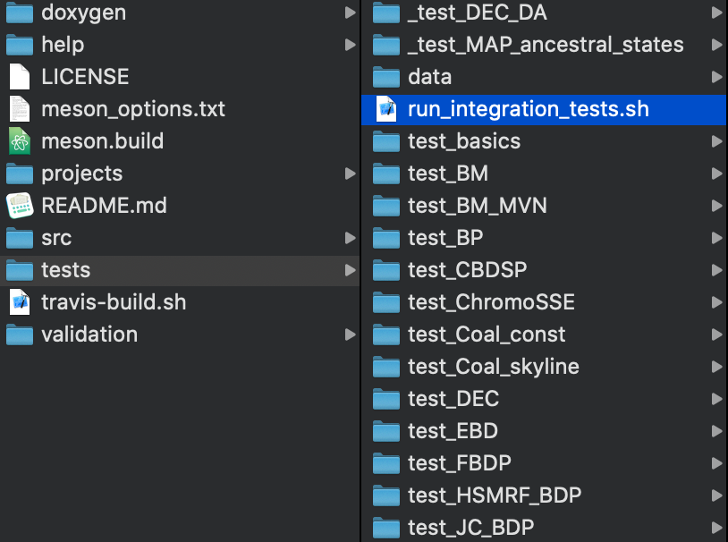
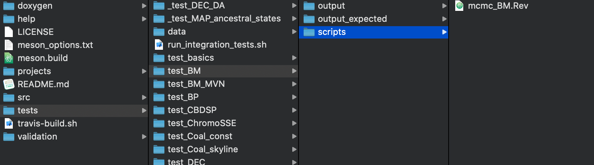

RevBayes is an extremely large and function rich software. It is not possible to foresee if any code changes that you do might affect other functions. This especially scares new developer who do not want to break existing code. For this reason we have design a suite of so called integration tests. In this document we will explain how these integration tests tests work in RevBayes.
The basic idea behind our integration tests is to used something closer to high level testing instead of unit testing. That is, an integration test in RevBayes consists of a standard analysis, or even only reading in data and extracting information, and printing some output. The output is then compared to the expected output using the common tool diff. An integration test passes if the output exactly matches the expected output.
Hence, integration tests ensure that the software does not change (at least from a user perspective). However, the integration test does not guarantee that the software works correctly. You should always make sure that the implementation is correct, for example, by running some validation using simulation-based calibration. Once you have established that the implementation is correct, you should use the integration tests to freeze the functionality which enforce that you can always rely on the code producing the output you expected at this time. (Note, no test if perfect and sometimes changes to the functionality could be missed.)
Since MCMC analyses in RevBayes and other software are intrinsically stochastic, a naive approach would expect different output every singly time you run an analysis. For example, if you run again an MCMC analysis in RevBayes, you should never get exactly the same trace of parameter samples. Thus, to enable exactly predictable output, you have to specify the random number seed at the very beginning of your analysis. In the end, all of our algorithms are deterministic given a sequence of random numbers ;)
In the RevBayes GitHub repository, the validation scripts are all located within the folder called tests.

run_integration_tests.sh.Within the tests directory, there is one bash script call run_integration_tests.sh.
This is the bash script that runs all integration tests.
Additionally, there is a data directory where all the data needs to be stored.
You must not store data for your integration elsewhere.
Then, each integration test has its own directory which must start with test_.
If an integration test should excluded from the automatic testing, then simply prepend the directory with a **, for example, **_test_DEC_DA**.
Our bash script run_integration_tests.sh traverses the **tests** directory and searches for all subdirectories starting with **test.
Hence, if you add your new integration test by creating a new directory called, for example, test_my_first_test, then your new integration test if automatically included in our test suite.
So far not too difficult ;)

Next, within a specific integration test, you need to have at least two subdirectories:
Rev scripts one for each integration test analysis. There could be multiple files as long as each is its own analysis because we assume that each script can be run by itself.Let us look at a simple integration test as an example.
Look at the file test/scripts/test_BM/scripts/mcmc_BM.Rev.
This script will run a standard Brownian motion analysis for a single continuous trait evolving along a phylogeny.
The only estimated parameter here is the rate of evolution sigma.
The details of the model are not important because they will differ for your analysis.
In the end, an integration test a almost a standard analysis.
The main differences and important aspects to consider/follow are:
seed(12345): We specify the seed of the random number generator at the very beginning of the script.diff on the directories output and output_expected.moveschedule="single" within the MCMC command to only use one move per generation.You can run the integration tests locally using (assuming your RevBayes GitHub directory is called revbayes)
cd revbayes/tests
./run_integration_tests.sh "$PWD/../projects/cmake/rb"
This will run all the integration tests which can take a few minutes, but currently it should be less than 2 minutes. At the end, you will receive the results as the output:
#### Checking output from tests...
#### Test passed: BM
#### Test passed: BM_MVN
#### Test passed: BP
#### Test passed: CBDSP
#### Test passed: ChromoSSE
#### Test passed: Coal_const
#### Test passed: Coal_skyline
>>>> Test failed: DEC (expected)
mismatch: mcmc_DEC.out
#### Test passed: EBD
>>>> Test failed: FBDP (expected)
mismatch: mcmc_FBDP.out
mismatch: mcmc_FBDP.trees
mismatch: mcmc_FBDP_mcc.tre
#### Test passed: HSMRF_BDP
#### Test passed: JC_BDP
#### Test passed: JC_EBD
#### Test passed: JC_unrooted
#### Test passed: MVN_move
#### Test passed: OU
#### Test passed: Partition
#### Test passed: UCLD_noncentered
#### Test passed: basics
#### Test passed: multiple_mcmc
#### Test passed: mvBM
#### Test passed: skygrid
#### Test passed: steppingstone
#### Success! unexpected failures: 0 expected failures: 2 total tests: 23
#### All tests passed.
Yeah, all tests passed!
Try now write your own integration test!
Yes, the MPI version uses a different sequence of random numbers, and thus the expected output will look different. We are currently working on a solution for this problem.